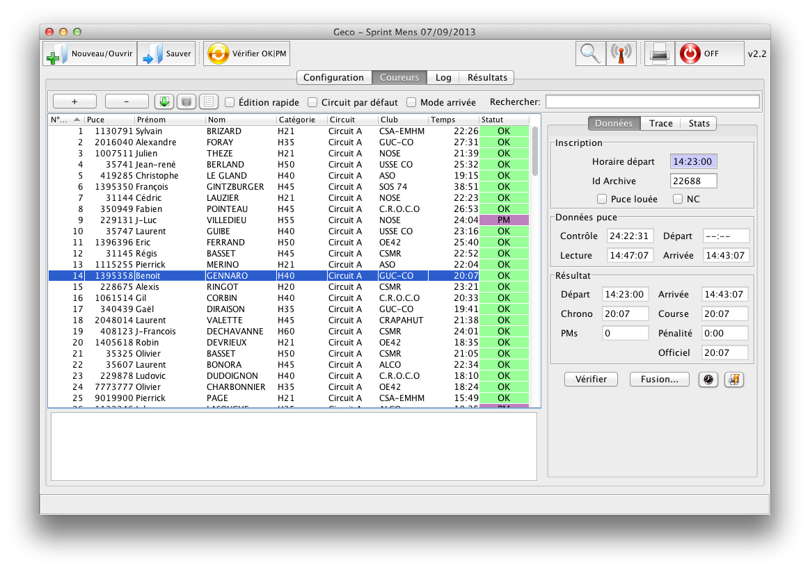

Geco
...est une application Java légère pour la gestion électronique de courses d'orientation. Développé à l'origine pour le format Orient’Show, Geco supporte toute compétition standard de petite à moyenne envergure.
Philosophie
Le projet Geco est porté par trois principes.
- Une meilleure expérience utilisateur grâce à une interface graphique aboutie et des processus simples : Geco met l’accent sur l’accessibilité et la manipulation directe des données. Les interactions sont visibles, immédiates et facilitent la GEC. Des fonctions comme le process Auto supportent des organisations avec un minimum de préparation.
- Spécialisation pour le format Orient’Show, qui demande des règles et fonctions particulières. Geco supporte aussi les formats classiques de la CO et tend vers une plate-forme extensible pour différents formats.
- Un projet open source pour la communauté CO, afin de partager plus facilement outils et idées nouvelles.

Geco est actuellement développé par Simon Denier. Mais vous pouvez aussi contribuer !